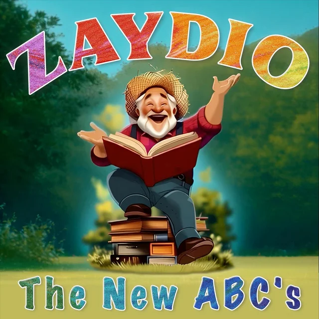

The New ABCs
Learning the alphabet has never sounded this good. 14 songs that make every letter stick — through singing, clapping, and pure fun.
Ages: 2–8 | Tracks: 14
Built for Early Learners
- Letter recognition from A to Z through catchy, memorable melodies
- Phonics and early literacy skills through sing-along repetition
- Memory development and focus through music and movement